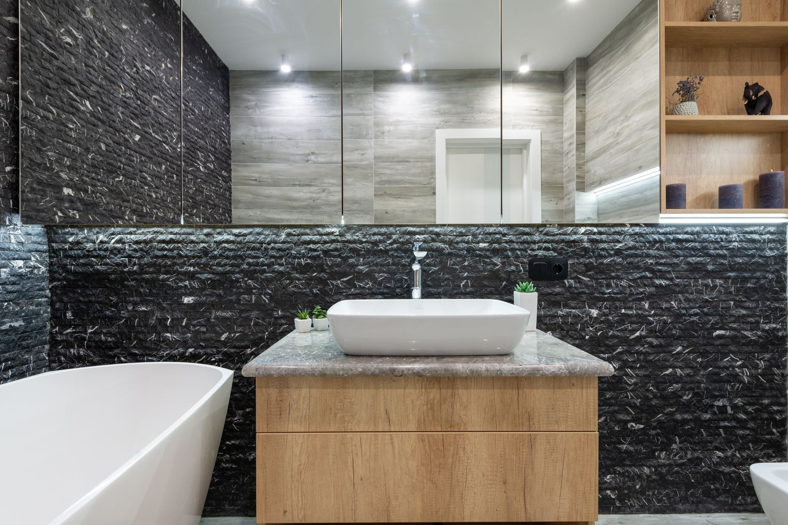

Glazurnictwo i wykończenia wnętrz w Kątach Wrocławskich i pod Wrocławiem. Biorę łazienkę od rozbiórki po zamontowaną armaturę, więc nie musisz spinać kilku ekip i pilnować, kto po kim wchodzi. W fachu od 2010 roku.

Glazurnictwem zajmuję się od 2010 roku, firma INPRO ma siedzibę w Kątach Wrocławskich. Pracuję w domach i mieszkaniach pod Wrocławiem: łazienki, kuchnie, wykończenia wnętrz. Należę do Stowarzyszenia Branży Wykończeniowej.
Zaczynam od oględzin i pomiarów na miejscu, potem mówię wprost, ile to zajmie i ile kosztuje. Klienci w opiniach Google piszą przede wszystkim o dokładności, porządku na budowie i o tym, że doradzam przy doborze materiałów, zanim je kupią. Ocena 5,0 z 9 opinii.
Poznaj nas →Łazienki i wnętrza z ostatnich lat. Zdjęcia z zakończonych realizacji, bez retuszu.


Zadzwoń i umów oględziny. Po obejrzeniu pomieszczenia dostajesz konkretny zakres prac, termin i cenę, jeszcze przed rozpoczęciem roboty.